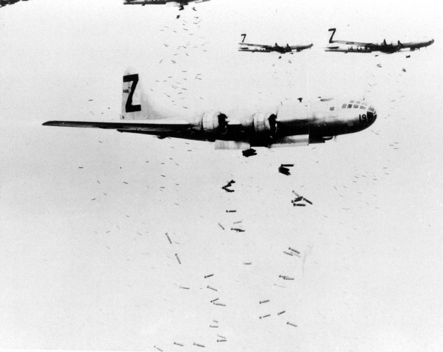

中学３年生・浜松市の空襲
堀江 哲郎さん・壮一郎さん
以下は、兄が自分の生涯を記述したもののうち戦時中のことの部分です。
（１９４５年）３月３０日一応終業式、４月から３年生になった。学校にいればかわいい１年生が入って来る頃だ。３０日いつもの通り旋盤で、作業をしていると、いきなりトタン屋根がバリバリとすごい音がした。慌てて外へ出てみると、すぐ近くの三菱重工の工場から、もうもうと黒い煙が天高く上がっていた。空襲だった。たちまち空襲警報が出て、待避命令が出た。急いでロッカーから防空頭巾を出してかぶり、工場の外にある浜松神社の境内の防空壕（ごう）目指して、いちもくさんに走った。その間にも、上の方からヒュウーッ、ヒュウーッと空気を裂いて爆弾が落ちてくる音がして、その爆弾と競走するように、壕と壕との間のくぼ地に頭から、突っ込んだ。その途端近くに落下して、大きな音と地響きと砂ぼこりがもうもうと、あたりに立ちこめた。落下の合間を見て、あらためて防空壕の中に入った。厚さ４センチほどの木の板で出来ている箱を半地下に埋めてあり、上を土で覆ってあった。高さ１．２メートル、幅１．５メートル、奥行き５メートルぐらいの大きさで入り口に厚い板を置いてあった。ほどなく再び、敵機の爆音が近づいてきたと思うまもなく、またヒュールルーッ、ヒュールルーッと落下音が聞こえてきた。壕の中で聞くと皆、至近弾に感じる。いよいよやられた、今度は駄目かと皆観念して、両手の指で、耳、目、鼻を押さえ、突っ伏していた。ドカン、ドカンと音と、壕がひっくり返るように揺れて、目を開けると厚い木の蓋が爆風でずれて、さしこんだ光で見ると、壕の中も、もうもうと土ぼこりでいっぱいだった。体中緊張で汗ぐっしょりだったが、とりあえず今回はまだ命があったと思った。空襲は波状攻撃で第１波、第２波というふうに１０波ぐらいやって来た。その度に「もう駄目か」「今度こそ最期か」との恐怖と緊張の連続で、終わって警報が解除になるころには、もう全員へとへとだった。
～中略～
仲間もそれぞれ家に着いて、次第に少なくなり、しまいには僕と昭ちゃん（友人の名前）と、あと１人だけとなったころ、やっと家にたどり着いた。夜の８時ごろだった。背中がどろんこになって、疲れ切って、戸を開けると、母が「浜松が大空襲で、駄目かと思った」と心配を通り越して、覚悟していたようで、やつれていた。
すでに、食糧事情も切迫していて、主食にジャガイモが混ざるのは、いい方で、大豆の絞りかすや、ハトの餌だったコーリャンをだんごにしたものなどの間に米粒が僅か入っていて、ホンの２口か３口ぐらいの量しか無かった。色も見たところ、紫がかったピンクで、粘っこくてうまいものではなかった。町中では、それすら無くて芋の葉や茎まで食べたところもあるという。
～中略～
それからは、毎日家を出るとき、これが今生の別れかもしれないと、覚悟して出た。そのころのある日、帰宅すると、母が飛び出して来て、「今日ここにも艦載機が機銃掃射をしてきて海野さんが撃たれて亡くなった」と言う。海野さんは農園で働いていた老人で、浜名湖のほとりのポンプ小屋の近くにいるところを見つかって銃撃を受けたらしい。農園には昔、伯父が遊覧飛行をやっていたころの飛行機の格納庫を倉庫にして使っていたが、迷彩は施してはあったが、大きな建物なので軍事施設と思われ、敵機に狙われ攻撃を受けたようだ。たまたま母もその倉庫の中にいて、目の前を火の柱が何本も通って生きた心地はしなかったそうだ。銃弾が柱に当たると弾の入った所は小さくても貫通して出た穴は１０倍ほどに大きくえぐれていた。戦争の直接人が人を殺す現場に遭遇して、いかに恐ろしいことか実感した。
堀江 哲郎さん・壮一郎さん（兄の壮一郎さんの体験談を哲郎さんが寄せた）
https://www2.nhk.or.jp/archives/shogenarchives/
kioku/detail.cgi?das_id=D0001800274_00000
上と同じサイト 最終閲覧日 8月8日